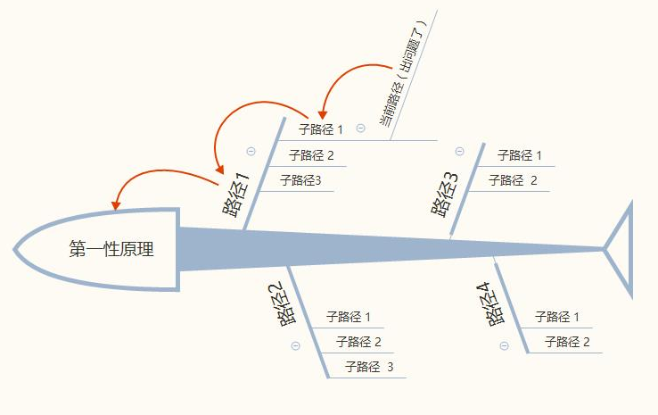

第一性原理思维
文章目录
“第一性原理”是物理学的一个专业名词，是指某些硬性规定或者由此推演得出的结论。与之相对的则是“经验参数”，经验参数是通过大量实例得出的规律性的结论。
“第一性原理”和与之相对的“经验参数”，其实是人类的两种思维方式——演绎法与归纳法。
“第一性原理”是一种演绎法思维，由1个或多个定律推演而来，或者它本身就是一个定律；
“经验参数”是一种归纳法思维，由N个已知的数据或现象，推论出一个规律。
归纳法：即时前提正确，也不能保证结论一定正确。演绎法：如果前提的正确的，那么结论一定正确
演绎法也有一个问题，如果演绎法的前提来自于归纳法，那么演绎法的结论同样终极无效
两者有何区别呢？举个例子说明下。
船长观察到前方有座冰山：
一个善用归纳法思维的船长A会这么想：我上次遇到的冰山在水面下还有一个大冰山，我上上次遇到的冰山也是这样，泰坦尼克号遇到的冰山也是一样的，所以这个冰山下面一定也会有一个大冰山，看来我要小心地绕过去。
一个善用演绎法思维的船长B会这么想：观察到这个冰山是移动的，说明它是浮在水中。根据浮力原理，F浮=G排(即物体浮力等于物体下沉时排开液体的重力)，所以水面下一定藏有一个体积足够大的冰山，看来我要小心地绕过去。
虽然殊途同归，但是很明显这是两种完全不同的思维方式。
人们总是更习惯于用归纳法思维来总结规律和解决问题。比如：
员工A销售业绩突出，电话量很高；员工B销售业绩突出，电话量同样很高；……。
所以得出结论，电话量是影响销售业绩的一个重要指标，于是KPI加上了电话量的考核。
这是我们工作中很常见的一种现象。但并不是中国教育和文化所带来的特有现象，而是全人类都更倾向于使用归纳法。
如果用演绎法，又会如何思考这个销量问题呢？
销售是什么？
是让产品与客户接触，激发出客户购买欲望，并且实现成交的一个过程。
由此可见，销售分为3个阶段：
step 1. 让客户接触到产品→step 2.激发出购买欲望→step 3.成交过程
其中step 1又可以拆分成官网展示、电话推销、样品寄送；同样step 2也可以拆分为官网广告文案、电话推销术语等环节。
因此，如果是以电话销售为主的产品，想要提高step 1和step 2的产出，可以增加电话量。（注意，这个时候的演绎法的结论与归纳法思维再次殊途同归。标记为结论一。）
但是，换个角度的话，你还能发现，为什么一定要用电话销售的形式呢？step 1和step 2是否可以变成新媒体营销，是否可以变成电商营销，是否可以变成网红营销？（此时，演绎法与归纳法的区别就出现了。标记为结论二。）
看到这里，你应该知道了归纳法与演绎法这两种思维的不同之处。
归纳法只能对已发生的事实总结规律，常常会忽略尚未在内部发生的新生事物。而颠覆式创新却是一种未发生的事情，所以归纳法思维是很难创造出颠覆式产品的。
第一性原理思维≠追本溯源、根因法、本质思考法
回想下之前提到的两个例子，冰山案例与销售案例。从中我们能发现两条重要结论：
第一条，归纳法与演绎法有时会出现一致的结论（参考：冰山的结论与电话量的结论一）。这说明，同样的结论，不一定思维方式是一样的。
第二条，使用演绎法出现了两个结论（参考：电话量的结论一和结论二）。这说明，同样的思维方式，不同的思考深度和角度可能会带来不同的结论。
根据这两个重要结论，我们会有些新发现——
1、据第一条：同样的结论，不一定思维方式是一样的。
可推导出，即使第一性原理思维和追本溯源法的思考结论常常一样，也不能说明他们两个是同一种。
2、据第二条：同样的思维方式，不同的思考深度和角度可能会带来不同的结论。
可推导出，同样是演绎法，第一性原理思维和追本溯源法采用的是不同的角度，因此结论可能会出现不同。
也就是说，第一性原理思维是演绎法思维的一种，追本溯源、根因法也是演绎法思维的一种，但两者不是同一个。并且如果两者的思考角度不同，就可能会带来不同的结论。
追本溯源法是从问题出发，一步步分析问题背后的原因，直到找出最终原因（有1个或者N个）。
第一性原理思维法是从原理出发，一步步往前推演，直到找出适合该问题的解决方法（有1个或者N个）。
由此可见，第一性原理思维和追本溯源思维是不同的，一个是从问题出发，推演出根本原因；一个是从原理出发，推演出解决方法。
我们再仔细分析下，为何出发点不同，会带来差异性的结果。

如果用追本溯源思维，从问题出发，那么它能一步步发现子路径1→路径1→第一性原理；但是它很难发现路径2、路径3、路径4，因为这种思维方式是要从问题开始推演的。而新路径（创新）恰恰隐藏在路径2、路径3、路径4之中。这就是用第一性原理思维常常能带来颠覆式创新的根本原因！
再看看上面那张图，聪明的朋友可能会发现一个问题，那就是第一性原理思维的局限性。
任何一个原理或定律，都不可能解决世界上所有的问题。因此，如果出问题的地方不在你的第一性原理的体系中，那么采用第一性原理的思维方法，是找不到解决方案的。
怎么办呢？
不断收集。
第一性原理是一个定律，或是一个模型。搜集的越多，那你能解答的问题也就越多。
最后，所有关于第一性原理思维，都在这里了：
1、第一性定理思维是一种演绎法思维，但与追本溯源法是不同的；
2、用第一性原理思维常常能带来颠覆式创新，而这一点，是其他思维方法很难实现的；
3、第一性原理思维有局限性，避免这种尴尬的最佳方法就是搜集更多的第一性原理；
4、跨学科学习是搜集第一性原理的捷径。
文章作者 nanshusu
上次更新 2021-08-26